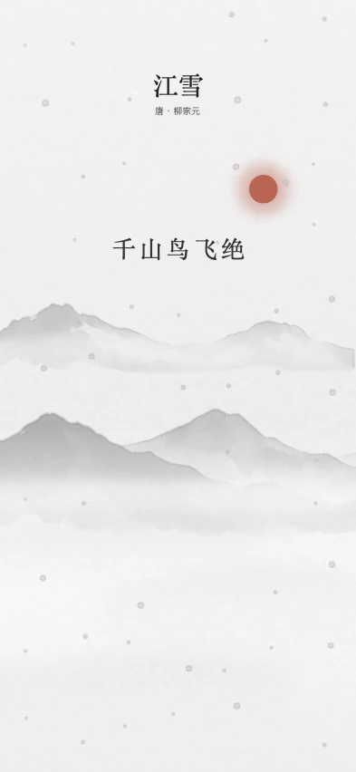

空山新雨后，
天气晚来秋。
空山新雨，明月清泉。· 水墨
卷一 / 诗境
按此刻心绪选一首诗。诗句随山水渐次展开，风雨与流水在画外相伴。
空山新雨后，
天气晚来秋。
空山新雨，明月清泉。· 水墨
莫听穿林打叶声，
何妨吟啸且徐行。
穿林细雨，缓步徐行。· 水墨
孤舟蓑笠翁，
独钓寒江雪。
雪落寒江，孤舟独钓。· 水墨



卷二 / 呼吸
在 App 中，日月的微光随呼吸起落。你也可以在这里跟随一轮月光，慢慢吸气，再缓缓呼出。
吸气 6 秒 · 呼气 10 秒
静候一息
卷三 / 画廊
在喜欢的景色前停一停。保存画面、挑一款装裱，或添一笔题记。下次展卷，再看那天的山水。
见山 · JIANSHAN
iPhone 需 iOS 26 或更新版本